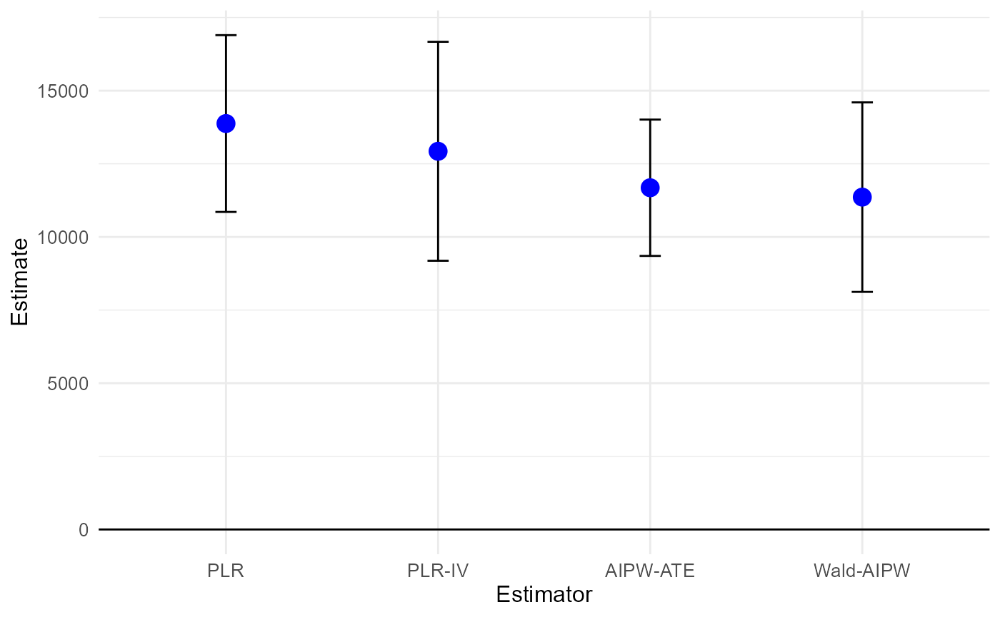
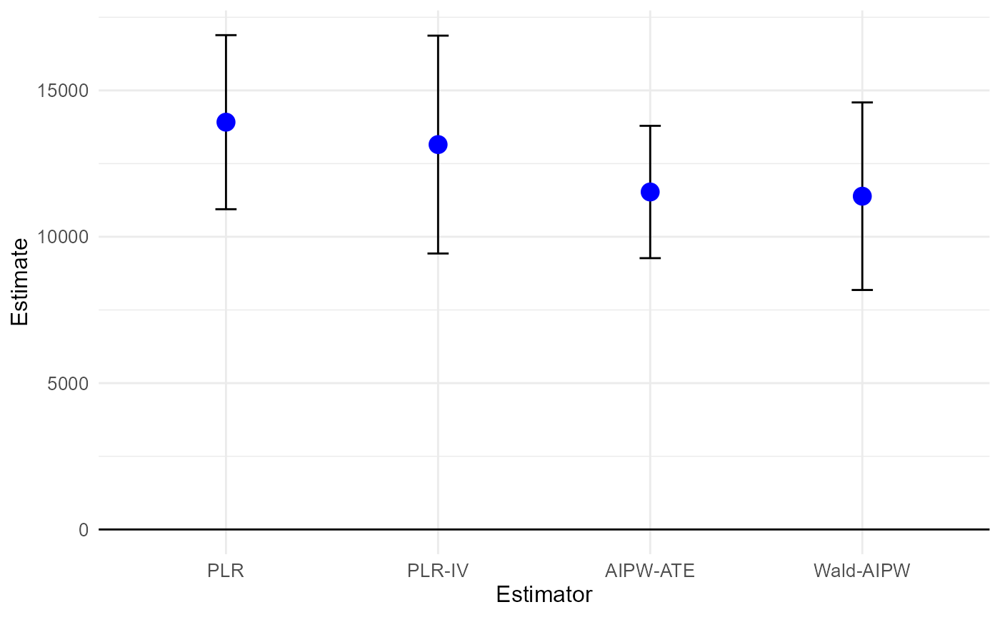
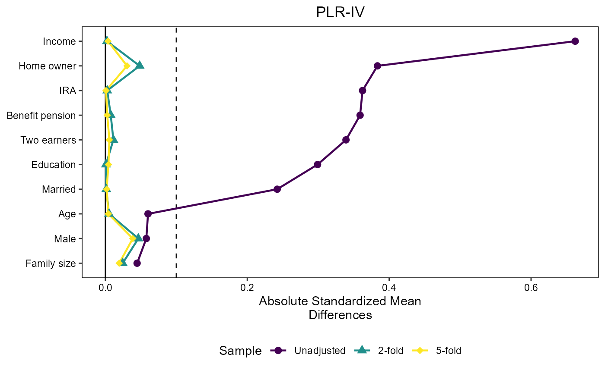
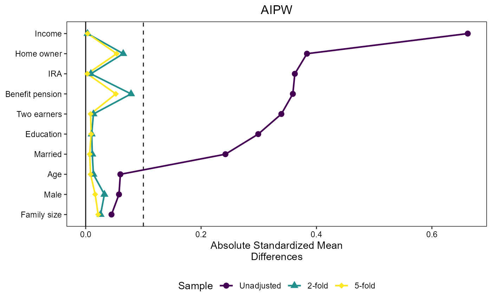
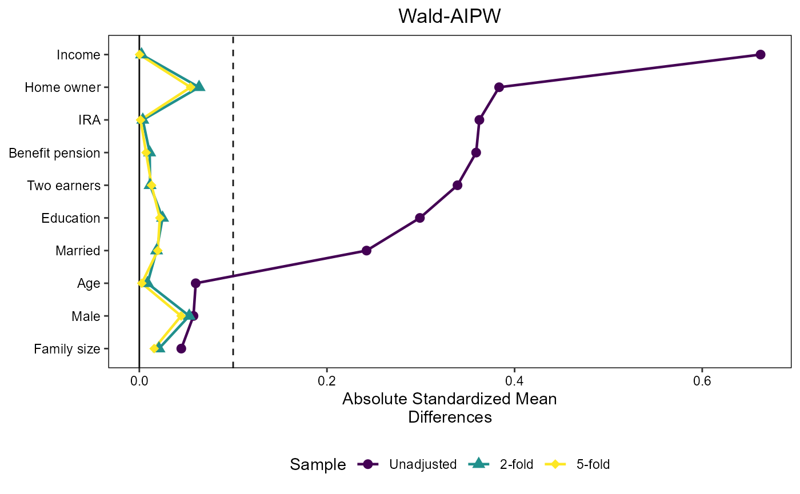
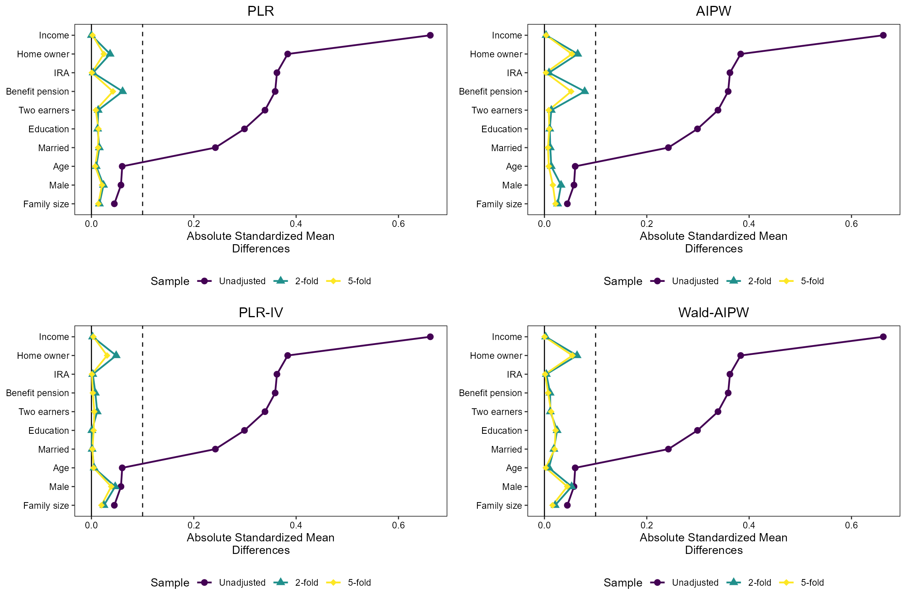

Application 401(k) - average effects
Michael C. Knaus
11/24
Source:vignettes/Application_average_401k.Rmd
Application_average_401k.RmdThis notebook runs the application described in Section 5.1 of Knaus (2024). The first part replicates the results presented in the paper, the second part provides supplementary information
1. Replication of paper results
Getting started
First, load packages and set the seed:
if (!require("OutcomeWeights")) install.packages("OutcomeWeights", dependencies = TRUE); library(OutcomeWeights)
if (!require("hdm")) install.packages("hdm", dependencies = TRUE); library(hdm)
if (!require("grf")) install.packages("grf", dependencies = TRUE); library(grf)
if (!require("cobalt")) install.packages("cobalt", dependencies = TRUE); library(cobalt)
if (!require("tidyverse")) install.packages("tidyverse", dependencies = TRUE); library(tidyverse)
if (!require("viridis")) install.packages("viridis", dependencies = TRUE); library(viridis)
if (!require("gridExtra")) install.packages("gridExtra", dependencies = TRUE); library(gridExtra)
set.seed(1234)Next, load the data. Here we use the 401(k) data of the
hdm package. However, you can adapt the following code
chunk to load any suitable data of your choice. Just make sure to call
the treatment D, covariates X, and instrument
Z. The rest of the notebook should run without further
modifications.
data(pension) # Find variable description if you type ?pension in console
# Treatment
D = pension$p401
# Instrument
Z = pension$e401
# Outcome
Y = pension$net_tfa
# Controls
X = model.matrix(~ 0 + age + db + educ + fsize + hown + inc + male + marr + pira + twoearn, data = pension)
var_nm = c("Age","Benefit pension","Education","Family size","Home owner","Income","Male","Married","IRA","Two earners")
colnames(X) = var_nmRun Double ML
In the following we run double ML with default honest random forest
(tuning only increases running time without changing the insights in
this application). As standard implementations do currently not allow to
extract the outcome smoother matrices, the OutcomeWeights
package comes with a tailored internal implementation called
dml_with_smoother(), which is used in the following.
2-folds
First, we run all estimators with 2-fold cross-fitting:
# 2 folds
dml_2f = dml_with_smoother(Y,D,X,Z,
n_cf_folds = 2)
results_dml_2f = summary(dml_2f)## Estimate SE t p
## PLR 13876.4 1541.5 9.0019 < 2.2e-16 ***
## PLR-IV 12927.8 1909.3 6.7710 1.352e-11 ***
## AIPW-ATE 11681.1 1188.8 9.8258 < 2.2e-16 ***
## Wald-AIPW 11360.9 1652.3 6.8757 6.539e-12 ***
## ---
## Signif. codes: 0 '***' 0.001 '**' 0.01 '*' 0.05 '.' 0.1 ' ' 1
plot(dml_2f)
Now, we use the get_outcome_weights() method to extract
the outcome weights as described in the paper. To illustrate that the
algebraic results provided in the paper are indeed numerical
equivalences and no approximations, we check whether the weights
multiplied by the outcome vector reproduces the conventionally generated
point estimates.
omega_dml_2f = get_outcome_weights(dml_2f)
cat("ω'Y replicates point etimates?",
all.equal(as.numeric(omega_dml_2f$omega %*% Y),
as.numeric(results_dml_2f[,1])
))## ω'Y replicates point etimates? TRUE5-fold
Run double ML also with 5-fold cross-fitting:
# 5 folds
dml_5f = dml_with_smoother(Y,D,X,Z,
n_cf_folds = 5)
results_dml_5f = summary(dml_5f)## Estimate SE t p
## PLR 13915.5 1517.0 9.1728 < 2.2e-16 ***
## PLR-IV 13150.3 1898.5 6.9266 4.579e-12 ***
## AIPW-ATE 11530.5 1153.4 9.9972 < 2.2e-16 ***
## Wald-AIPW 11386.1 1634.5 6.9659 3.470e-12 ***
## ---
## Signif. codes: 0 '***' 0.001 '**' 0.01 '*' 0.05 '.' 0.1 ' ' 1
plot(dml_5f)
extract the weights and confirm numerical equivalence:
omega_dml_5f = get_outcome_weights(dml_5f)
cat("ω'Y replicates point etimates?",
all.equal(as.numeric(omega_dml_5f$omega %*% Y),
as.numeric(results_dml_5f[,1])
))## ω'Y replicates point etimates? TRUECheck covariate balancing
We use the infrastructure of the cobalt package to plot
Standardized Mean Differences where we need to flip the sign of the
untreated outcome weights to make them compatible with the package
framework. This is achieved by multiplying the outcome weights by 2 \times D-1:
threshold = 0.1
create_love_plot = function(title, index) {
love.plot(
D ~ X,
weights = list(
"2-fold" = omega_dml_2f$omega[index, ] * (2*D-1),
"5-fold" = omega_dml_5f$omega[index, ] * (2*D-1)
),
position = "bottom",
title = title,
thresholds = c(m = threshold),
var.order = "unadjusted",
binary = "std",
abs = TRUE,
line = TRUE,
colors = viridis(3), # color-blind-friendly
shapes = c("circle", "triangle", "diamond")
)
}
# Now you can call this function for each plot:
love_plot_plr = create_love_plot("PLR", 1)
love_plot_plriv = create_love_plot("PLR-IV", 2)
love_plot_aipw = create_love_plot("AIPW", 3)
love_plot_waipw = create_love_plot("Wald-AIPW", 4)
love_plot_plr
love_plot_plriv
love_plot_aipw
love_plot_waipw
Create the combined plot that ends up in the paper as Figure 2:
figure2 = grid.arrange(
love_plot_plr, love_plot_aipw,
love_plot_plriv,love_plot_waipw,
nrow = 2
)